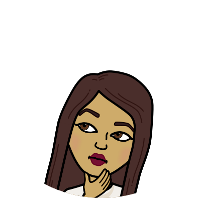

Hello, my name is Nishat Faruqui. I graduated from Emory University with a bachelor's degree in psychology. I've always been fascinated with how the mind works and human intelligence, and now I am learning about how computers work and artificial intelligence. My technical skills include HTML, CSS, and Javascript. Aside from the world of science, I am also passionate about art, poetry, and dance. Programmming allows me the creative freedom to integrate both art and logic. The field of computer science is always progressing, and hopefully in this development, the representation of women in technology also escalates. My pursuit in this discipline is to be the best programmer I can be and to serve as an example for all the young girls who are trying to recognize their potential and the available opportunities out there in the world for them.
